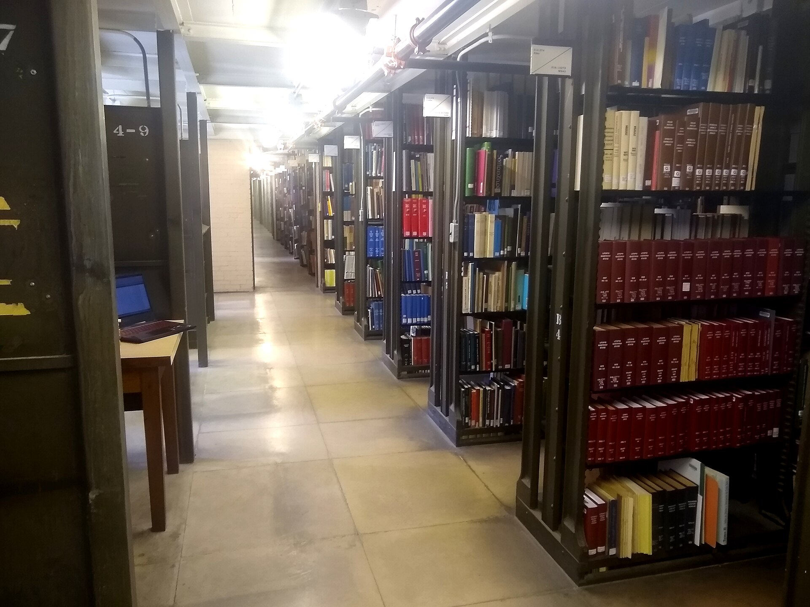

Research with real sources
Ask a question and get an answer built from 250M+ papers, every claim cited. Then review, analyse and write, up to your thesis defence.
- Every claim cites a real paper you can open.
- Your PDFs, Zotero and Mendeley in one Library.
- From the answer to a thesis: review, analyse, write, present.
How it works
First, ask your question.
Does sleep after learning improve memory consolidation?
DeepAll papersMaster's student
- Searched 250M+ scholarly worksDone
- Papers read32
- Papers cited in the answer18
- Report ready2 min 40 s
Then read the evidence.
Year 2000–2026Study type: review, RCTJournal quality: Q1–Q2Exclude retracted
14 of 18 studies report a benefit
Supports 14Mixed 3Does not support 1
- [1]The memory function of sleep
Diekelmann S, Born J · Nature Reviews Neuroscience · 2010Review - [2]About sleep's role in memory
Rasch B, Born J · Physiological Reviews · 2013Review
Then build on it.
Write a literature reviewFind gapsCheck citationsMake slides
2.1 Sleep after learning
Across reviews of the field, sleep in the hours after learning improves later recall of declarative material when compared with an equal period awake (Diekelmann & Born, 2010; Rasch & Born, 2013). The benefit is linked to slow-wave sleep and hippocampal replay (Stickgold, 2005) and is larger for material learned with intent to remember (Walker & Stickgold, 2006). Tab
References
Diekelmann, S., & Born, J. (2010). The memory function of sleep. Nature Reviews Neuroscience.
Rasch, B., & Born, J. (2013). About sleep's role in memory. Physiological Reviews.
Two ways to work
Does sleep after learning improve memory consolidation?
Sleep in the hours after learning improves later recall compared with an equal period awake [1][2].
Supports 14Mixed 3No 1
Is the benefit the same after a nap?
Naps that include slow-wave sleep show the same direction of effect, in smaller samples [2][4].
Ask a follow-up
2.2 Limits of the evidence
Most sources are narrative reviews, and effect sizes vary with the task and the delay before testing, so pooled estimates should be read with care (Rasch & Born, 2013).
Tabaccept@cite a paper
2.3 Open questions
Whether a daytime nap gives the same benefit as a night of sleep is not settled (Walker & Stickgold, 2006).
9,840 words · 41 references · APA 7
PhD candidateStart a task
- Systematic ReviewPRISMA first: search, screen, extract
- Thesis SuiteOutline, methodology, chapters
- Reviewer · PhDComments and a scorecard per chapter
- Make slidesA defence deck from your thesis
Most used mode: Detailed
Who it is for
-
Find sources you can cite, start with a short answer and check your citations before you hand in. For undergraduates
-
Plan the dissertation, build the literature review from real papers and have each chapter reviewed at master's level. For master's students
-
Systematic review, thesis chapters, defence preparation: from the protocol to the questions examiners ask. For PhD candidates
-
Review a student's chapter in a shared project, turn a thesis into a manuscript and draft the next proposal. For academics
-
Ask clinical questions against PubMed, filter by study type and keep the sources for your review. For medicine
-
Get a cited report on a market or policy question, check the claims and turn it into a slide deck. For industry
What it does
- Cite real papers
Answers cite real papers, never invented ones.
- Search everywhere
Search papers, the web, PubMed or your own Library.
- Filter the evidence
Filter by year, study type, journal quality and citations.
- Chat or write
Research in chat, or write in the editor with suggestions and citations.
- Share a project
Share a project with your supervisor or co-authors.
No feature by that name. Try "cite", "search" or "share".

What it reads
An index of 250M+ scholarly works, PubMed, the web when you ask for it, and the PDFs you bring yourself.
- 250M+scholarly works in the index
- 10,000+citation styles, from APA to Vancouver
- 5file types you can attach: PDF, .doc, .docx, .md, .txt
Nine tools to start with
All 40+ tools| Tool | What it does | Where | Credits |
|---|---|---|---|
| Deep Research | Cited reports from real papers | Research | 1 to 20 credits |
| Find Papers | Search 250M+ scholarly works | Research | No credits |
| Chat with PDF | Answers with page numbers | Library | Uses credits |
| Library | PDFs, Zotero and Mendeley | Library | No credits |
| Thesis Suite | Outline, methodology, chapters | Write | Uses credits |
| Proposal Studio | Research and grant proposals | Write | Uses credits |
| Thesis to Manuscript | A chapter into a journal paper | Write | Uses credits |
| Citation Generator | 10,000+ citation styles | Library | No credits |
| Text Humanizer | A natural-style rewrite | Write | Uses credits |
A deep answer
A structured report from 20–40 papers. 5 credits.
Plans and prices
$29a month, or $19 a month billed yearly ($228)
1,500 credits a month
For theses and systematic reviews. High-quality mode, Detailed reports and project sharing with your supervisor or co-authors.
Choose ProA credit pays for the longer AI jobs: a Summary answer is 1, a Deep report 5, a Detailed report 20, a document review 10 and a slide deck 10.
Paper search, citations, autocomplete and the Library do not use credits. Need more in a busy month? A top-up of 500 credits is $7.
Questions
Where do the sources come from?
From a scholarly index of 250M+ works (the OpenAlex catalogue), from PubMed for medical questions, from the web when you switch it on, and from the PDFs in your own Library. You choose which.
Can it make up a citation?
Citations come from search results, not from the model's memory, so each one is a real record you can open. The text around a citation is still AI-written, so check that the source says what the answer claims.
Is it allowed at my university?
Rules differ by university, course and journal, so check yours before you submit. Every answer shows its sources, so you can read them and write in your own words.
What do I get for free?
30 credits a month: Summary and Deep answers and a preview of each workspace. Paper search, citations and the Library do not use credits.
What is a credit?
The unit the longer AI jobs cost. A Summary answer is 1 credit, a Deep report 5, a Detailed report 20, a document review 10 and a slide deck 10.
Can I use my own PDFs and Zotero library?
Yes. Upload PDF, Word, Markdown or text files, or import from Zotero and Mendeley. Answers from your own files show the page they come from.
Can I cancel any time?
Yes. A plan runs to the end of the period you paid for and does not renew after you cancel. The Defence Pass is paid once and never renews.
Take a seat
Your first 30 credits are free every month. Ask one question and read where the answer comes from.
Ask a question